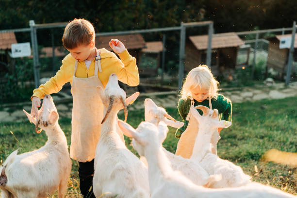
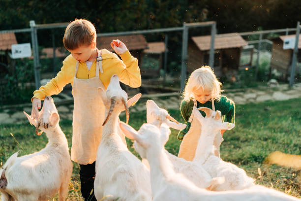

Hospedaje Confortable
Disfruta de una estancia relajante en
nuestras instalaciones equipadas
para
ofrecerte el máximo confort y tranquilidad
para que puedas disfrutar más cómodo
de todo lo que ofrecemos.
SE PARTE DE LA PRODUCCION
1. Accede a una variedad de productos frescos
2. Podrás probar nuestras muestras de los
productos aquí realizados
3. Con lo que recolectes podras aceder a
nuestros cursos de recetas
4. Disfruta de una hermosa vista, contamos
con un mirador en donde se
encuentra
nustra Agrocafeteria
TOURS
Podrás ver las diferentes hectáreas de la finca
y lo que se produce en ellas.
RESTAURANTE
Si lo que buscas es una tarde de diversion y
comida de calidad nuestro restaurante es
tu mejor opcion.